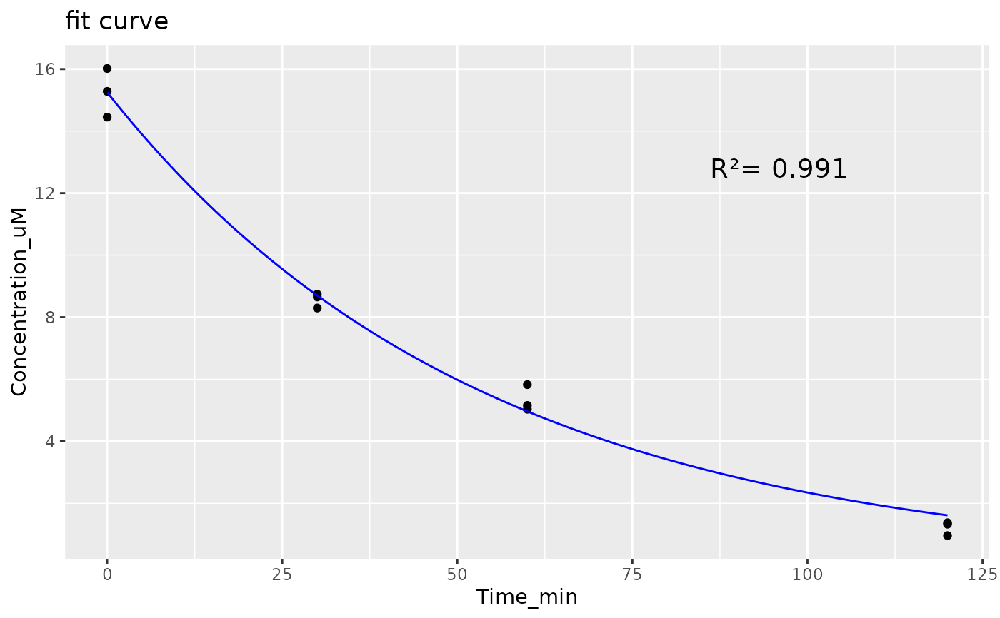

Fits a one-phase exponential decay to the concentrations measured in a substrate depletion experiment and returns the depletion rate constant. The starting concentration is the mean of the concentrations at time 0. A plot of the data and the fitted curve is drawn so you can judge the fit.
The rate constant is not yet a clearance for PK-Sim: pass it to
ivive_clearance() with value_type = "rate_constant".
Value
A data frame with one row, parameter = "rate_constant" (1/min),
and the columns estimate, lower and upper, the bounds of the 95%
confidence interval. A warning is given when the fit is poor (R-squared
below 0.8) or when the concentration falls by less than 80%.
Examples
depletion <- read.csv(system.file("extdata", "clearance.csv", package = "ESQivive"))
head(depletion)
#> Time_min Concentration_uM
#> 1 0 15.280881
#> 2 0 16.018609
#> 3 0 14.449654
#> 4 30 8.296010
#> 5 30 8.739849
#> 6 30 8.653202
fit_depletion_curve(depletion)
#> 85.92071 (5.31e+00): par = (0.01)
#> 6.355533 (1.16e+00): par = (0.01642129)
#> 2.767429 (5.79e-02): par = (0.01858765)
#> 2.758336 (8.26e-04): par = (0.01871273)
#> 2.758334 (1.50e-05): par = (0.01871094)
#> 2.758334 (2.71e-07): par = (0.01871097)

#> Waiting for profiling to be done...
#> parameter estimate lower upper
#> 1 rate_constant 0.01871097 0.0173403 0.02020731